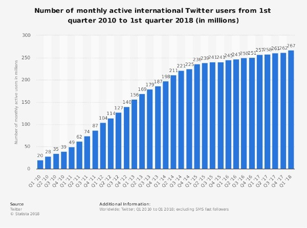
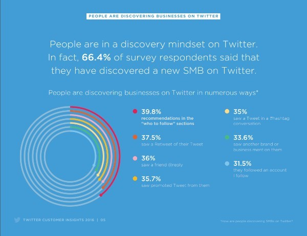
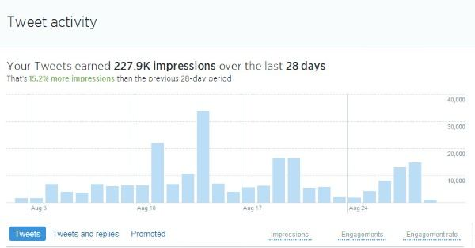
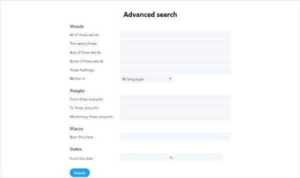
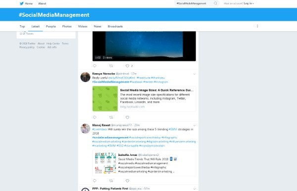
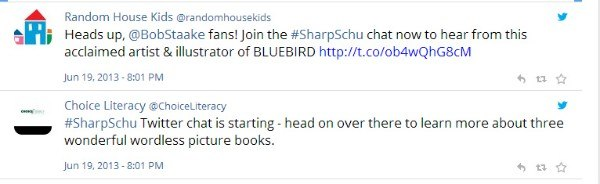

It all began with the first tweet in 2006.
Who would’ve imagined that a time would come when 500 million people would tweet each day.

As observed from the above statistics, 336 million users surf on Twitter on a monthly basis.

If this isn’t enough to convince you to step up your game on Twitter, we don’t know what else will.
Whether you’re a freelancer or a small business, Twitter can be utilized to get new sales or reach potential prospects or customers. Which is exactly why JARVEE has decided to compile a list of 5 tactics you can use to experience a positive growth of your business.
So without further ado, close all other extra tabs you have, stop other distracting activities and have a quick 5 minute read that may change the way you perceive Twitter.
1. Use Twitter For Observing Your Audience
A good rule of thumb in business is to listen to your customer feedback. If not feedback, listen to what exactly are they talking about related to your product or niche.
Twitter analytics gets your job done in regards to what is stated above. It proves itself as a great way to collect data about your audience.
Moreover, you can easily understand the concerns and pain points of your audience with a little bit of analysis.

However, there’s more cream to be added on top of that.
And that is Twitter search.
The Twitter search allows you to research on keywords, hashtags or topics.
There is a simple search.
And an Advanced search.

Both are quite self-explanatory so we suggest you get your feet wet a little with their search engine.
Twitter search can be used for different purposes. One of them includes the research of your niches’ audience. Say you type #social media management in the Twitter search. This is what will come up.

As you can see there’s quite a bit of data you can gather from here. You can observe what is your audience talking about, other hashtags they are using. Last but not least, you can even curate more content ideas by researching what your audience is sharing!
However, you’re missing out on a piece of your marketing puzzle, if you haven’t already placed it.
Let’s talk more about that in Tactic 2.
2. Use Images To Tell Stories.
There is no doubt on the fact that you get more visual context from an image than just a tweet for a link. And when you add a story in your images, you just discovered a formula for success.
We shed some light on storytelling in this Instagram post, it is an insightful, 5-minute read.
However, storytelling with photos is not limited to Pinterest and Instagram.
You can advantageously use Twitter to get people to interact and engage with your post.
How? Every brand has a unique way to do so. Some people design images which trigger an emotional response. Some ask a question in an image. Because of the nature of the photo, it is more likely to be seen by more people hence making it more likely for them to respond. This in a way starts a cycle of sharing and response.
Storytelling in photos not only keeps your audience on their toes but it’s also a creative way to gather data about them. Think about how you can use images to effectively form a story.
Remember to not hard sell. Pictures are not billboards so don’t treat them like that. The max you should do is soft selling, otherwise, it looks spammy and people will not follow you. Think about what will make someone fascinated or catch their attention. Remember, Seeing is believing.
3. Use Video On Twitter
The effectiveness of video marketing has been discussed several times on our blog before. If you still don’t believe us, then ask yourself a simple question.
Would you rather watch a 3 minute, short and engaging video?
Or would you rather read a 2000 word article shared on social media?
There are many ways to share a video on Twitter. You have the ability to import a video directly to Twitter for the purpose of sharing. However, an even better feature is the use of Twitter’s live stream.
The Twitter live stream allows you to record a video for up to 2 minutes and 20 seconds. If you don’t want to tweet publicly you can also tweet someone directly.
There are many ways to use video marketing on Twitter. For example, many new and smart influencers give their audience a personalized thank you message for following or engaging with them.
Another commonly observed tactic is asking your audience a question/questions through Twitter video. Since a video is more likely to get a response from your audience, you’ll be able to gather more data from the questions you ask.
You can even share YouTube videos so that they can be watched directly on Twitter. However, try to use this in a sense of either being helpful or being a good storyteller. Don’t spam your audience with ads.
In conclusion, if you want to reach a person, be it a great potential influencer for your brand or perhaps someone that you’re very grateful for on their engagement with your brand, a Twitter video is a great way to make a direct connection with them.
4. Host Or Participate In A Twitter Chat.

Twitter chats are very interesting and super conversational, which is why the engagement level with your audience is quite high.
The high engagement leads to a loyal customer base/followers and networking opportunities. This makes Twitter chat much more effective compared to other forms of interaction with your audience. So if you have a group of people you want to reach, setting up a schedule for Twitter chat would be a step in the right direction.
You will get to know your audiences’ views, pain points, common queries etc. You can even host an ask-me-anything with your audience to gather data about questions you have in mind.
People really look forward to such interactions. And so should you.
5. Use Live Stream Platforms Connected To Twitter
The power of live streaming is that it provides a very unique experience. especially on Twitter. It opens the doors to a lot of opportunities because of the high engagement it offers. Many brands use live streaming for Q&A sessions, webinars, networking or direct interaction with their audience. Before delving into live streaming, research on the different types of platforms that will suit your target.
Each platform has its own unique capabilities. One might be more effective for you than the other. This is why you should educate yourself on all platforms before using them. It may sound like a tedious task but in order to succeed, you must know the dynamics of each platform.
Periscope is a platform that is relatively new and drives great results.
This is a nice introductory video for Periscope.
We highly recommend that you look into different live streaming platforms associated with Twitter, see which one is right for you and set up a live streaming strategy.
Twitter is sometimes overlooked as a marketing platform due to the rise of many other social media sites. However, it still proves to be one of the most effective social media platforms to market on.
Kylie says
Hahahah it was nice that you shared the first tweet as a start for your article. I wonder what would the twitter interface look like back in 2006. hmm.
Reinaldo says
66% reported they discovered a SMB through Twitter. WOW. I knew twitter marketing was effective but never knew that it was THAT effective. Will most certainly level up my game with Twitter now!
Logan says
Glad to hear that
Fabian says
Twitter advertisement combined with Twitter analytics is a nice way to grow traffic. In some countries, it doesn’t even cost as much and the growth is quite good.
Logan says
Thanks for the tip
Jae says
Twitter search is indeed a very great way of finding relevant content, keywords and hashtags that you can resourcefully use for your Twitter marketing efforts.
Logan says
True
Lyla says
Ohhh so now i understand one of the reasons why all these big brands get so much engagement. It’s the use of their images that tell a story! I myself always love those types of pictures..
Logan says
exactly
Daren says
Twitter chat is also a fun and excellent way for interacting with your audience. If you’re going to start with it, i’d say not to make it boring. Make it interesting while simultaneously asking them questions about your brand.
Nilda says
Periscope is something relatively new and I just love the engagement it can drive. Everyone marketing on Twitter should definitely be giving periscope a try.
Joseph says
Who never heard about Twitter, it surely did after Trump became president 🙂 It’s not so popular as Instagram and Facebook, but it has so large database that worth try using and implementing in our entire marketing strategy.
Rheanna says
Woow I can’t believe it started in 2006. I don’t have that feeling. For me Twitter still has young, new, fresh vibe.
Syed says
Thanks for sharing! Twitter enables you to easily observe your audience and this way you can collect very valuable information that can help you to upscale your business. You just need to dig into it a bit, and this article can definitely help!
Jay Liotta says
Very nice article, thanks for sharing. I never heard for Periscope, after this I surely will Google it and see what exactly does it offer.
Tim Lonne says
I love Twitter, it’s so dynamic and live. You just need to get used to it and then you’ll start benefit from it. It’s a great tool!